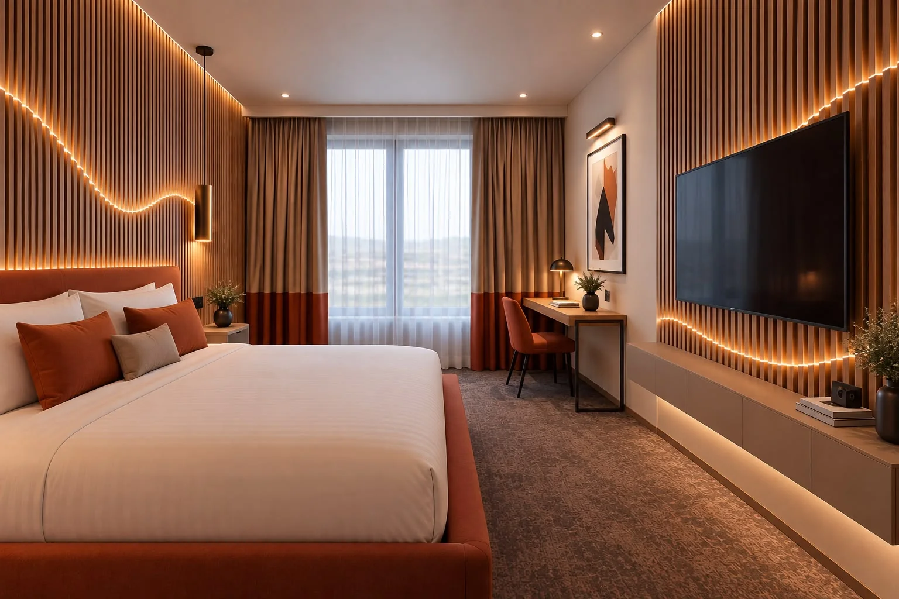

Maison Corleone pour le Marriott CDG
Visiteprivée
Centre Roissy
Vos chambres
réinventées
(01) Chambre DeluxeLa proposition, rendue à partir de la photo de la chambre. La visite continue en 3D.
Maquette 3D en préparation